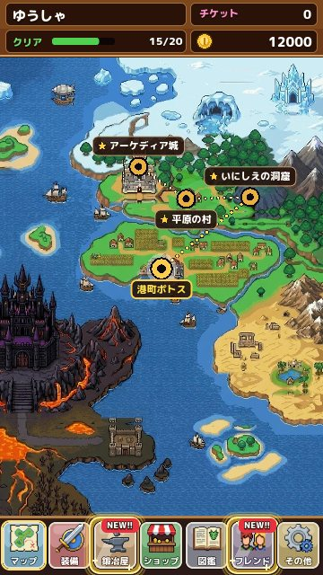
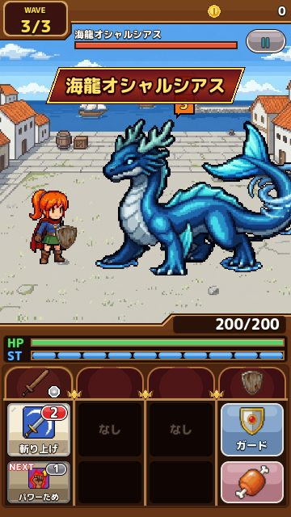
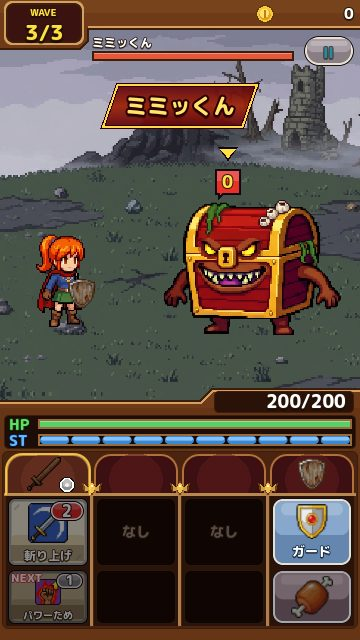

地上のエリア紹介
地上の 14 のエリアの並び、店のある町、STAGE と WAVE の数、ボスと宝の STAGE をまとめました。 更新：2026-11-23
地上の旅のしくみ
地上の冒険は、王さまのいるアーケディア城から始まり、地図の上を 1 本道で進んでいきます。新しいエリアは、いちばん新しく開いたエリアの最後の STAGE（STAGE 5）をクリアしたときに開き、地図に点線がのびます。前のエリアにはいつでも戻れるので、素材やコインを集め直すのも自由です。
ひとつのエリアには STAGE が 5 つあり、STAGE 1 はいつでも、STAGE 2 から先は 1 つ前の STAGE をクリアすると遊べるようになります。STAGE はそれぞれ 3 つの WAVE でできていて、画面の左上に「WAVE 1/3」のように今の WAVE が出ます。
- WAVE 1 は敵が 1〜2 体、WAVE 2 からは 2〜3 体です（同時に出る敵は 3 体まで）
- STAGE 4 の最後の WAVE に中ボス、STAGE 5 の最後の WAVE にエリアのボスが出ます
- 中ボスにはお供が 1 体つくことがありますが、大きなボスはひとりで出てきます
- アーケディア城だけは特別で、どの WAVE も敵が 1 体ずつしか出ません。最初の練習の場所です

STAGE の一覧の「詳細」では、出てくる雑魚・STAGE 4 の中ボス・STAGE 5 のボスの絵と弱点の武器、落とす品のレア度の割合、初回クリアの品が見られます。新しいエリアに入ったら、まず詳細を開いて、どの武器の種類が必要かを確かめるのが基本です。弱点のしくみは弱点と属性のページにくわしくまとめています。
エリアの並びと中ボス・ボス
地上のエリアは次の順に開きます。中ボスとボスのあとのカッコは、弱点の武器の種類です。初回クリアの品は、STAGE 5 のボスを初めて倒したときに必ずもらえる品で、2 回目からはまれに落とします。
| 順 | エリア | 店 | 中ボス（STAGE 4） | ボス（STAGE 5） | 初めて倒すと |
|---|---|---|---|---|---|
| 1 | アーケディア城 | － | 王宮騎士オージーン（槌） | 龍騎士マーゴス（槌） | ナイトランス |
| 2 | 平原の村 | あり | ワイルドウルフ（槍） | 翼龍ドラゴス（槍） | モグランシールド |
| 3 | いにしえの洞窟 | － | 古代ゴーレム（槌） | 鈍龍タトルノドン（槌） | 大地槌バンガイア |
| 4 | 港町ポトス | あり | マーメイド（剣） | 海龍オシャルシアス（槍） | 竜剣ドラピュアン |
| 5 | 砂漠の遺跡群 | － | こげゴーレム（槌） | 熱龍マグードワイバル（剣） | ドラゴニルランス |
| 6 | 砂漠のオアシス | あり | 犬かきウルフ（槍） | 樹龍ワシャラス（槍） | 大樹棍ユグドラシル |
| 7 | 砂漠の宮殿 | － | 光のパラディーナ（槍） | 光龍キラノス（槍） | 風の宝玉 |
| 8 | 小島 | － | 森ガール（剣） | 水龍ピチャルス（槍） | 水刀ガブノミ |
| 9 | 漁師の里 | あり | ダイビングゴーレム（槌） | ミミッくん（槌） | 巨人のアメちゃん |
| 10 | 孤島 | － | 自然のネイチャ（剣） | 奇龍ナーゾキーモス（槍） | ティアマルト |
| 11 | 氷の洞窟 | － | サンダーウルフ（槍） | 光龍ゴルデピカライア（剣） | 光輪のヤリ |
| 12 | 氷の宮殿 | － | キラメイド（剣） | 闇龍ヤミジャス（槍） | 水の宝玉 |
| 13 | 深淵の観測所 | － | シャドウウルフ（槍） | 闇のダルクネス（剣） | トライグリード |
| 14 | 灼熱の洞窟 | － | 炎のエンゴウ（槌） | 炎龍ゴーゴモス（槌） | 炎の宝玉 |
表を見るとわかるとおり、序盤は槌、中盤は槍が活躍する場面が多く、後半は剣・槍・槌のどれもが必要になります。ボスの多くは竜なので、竜に強い「ドラキラー」の付いた武器も長く使えます。各エリアの敵の一覧と立ち回りは、地上の攻略 前半・中盤・終盤のページで、エリアごとにくわしく紹介しています。
初回クリアの品を次のエリアで生かす
エリアのボスが初めてくれる武器は、すぐ次のエリアで役に立つものが多いのが地上の旅の特徴です。属性の有利（炎は風に、水は炎に、風は水に、光と闇はおたがいに強い）はダメージが 2 倍になり、弱点の武器の種類はダメージ 1.5 倍・スタン値 5 倍なので、両方がそろうと大きな差になります。
- 平原の村のモグランシールド：洞窟の景色の戦闘で、ガードしたダメージをさらに 30% 減らします。次のいにしえの洞窟は洞窟の景色です
- いにしえの洞窟の大地槌バンガイア（風・槌）：風の武器で有利な敵（水）を攻撃すると威力がさらに上がります。次の港町ポトスは水の敵ばかりで、槌が弱点の敵もいます
- 港町ポトスの竜剣ドラピュアン（水・剣）：次の砂漠の遺跡群は炎の敵ばかりで、ボスの熱龍マグードワイバルは剣が弱点です
- 砂漠の遺跡群のドラゴニルランス（炎・槍・ドラキラー）：次のオアシスのボス樹龍ワシャラスは、風の属性で槍が弱点の竜です
- 孤島のティアマルト（闇・剣）：次の氷の洞窟は光の敵ばかりで、ボスの光龍ゴルデピカライアは剣が弱点です
- 氷の洞窟の光輪のヤリ（光・槍）：次の氷の宮殿のボス闇龍ヤミジャスは、闇の属性で槍が弱点です
このように、ボスを倒したら「もらった武器の属性と種類が、次のエリアの敵に合うか」を詳細で確かめると、装備選びがずっと楽になります。

店のある町とガチャ
地上で店があるのは平原の村・港町ポトス・砂漠のオアシス・漁師の里の 4 つです。平原の村に着くと、ショップと鍛冶屋が使えるようになります。新しい店の町に着くと、下の欄のショップのボタンが光って知らせてくれます。
町のガチャは 1 つで、1 回ごとに剣・槍・槌がそれぞれ 30%、盾が 10% の割合で選ばれます。10 連もできます。町ごとの値段と、出るレア度は次のとおりです。
| 町 | 1 回の値段 | N | R | SR |
|---|---|---|---|---|
| 平原の村 | 150 コイン | 98% | 2% | － |
| 港町ポトス | 500 コイン | 80% | 20% | － |
| 砂漠のオアシス | 2,500 コイン | 35% | 62% | 3% |
| 漁師の里 | 6,000 コイン | 10% | 75% | 15% |
| 漁師の里（孤島のクリア後） | 8,000 コイン | － | 60% | 40% |
| 漁師の里（灼熱の洞窟のクリア後） | 12,000 コイン | － | 30% | 70% |
漁師の里のガチャは、孤島と灼熱の洞窟をクリアすると品ぞろえが上がります。ガチャを引くと 8% の確率で「たからのチケット」がおまけでもらえます。ガチャのくわしい話はガチャのページを見てください。

宝の STAGE（小島・孤島）
小島と孤島には、ふつうの 5 つの STAGE のほかに「たからの STAGE」があります。そのエリアに着いていて、たからのチケットを 1 枚以上持っていると入れます。戦いの途中で「離脱する」を選んだときは、チケットは減りません。
- WAVE 1 と WAVE 2 は、金色に光るラッキーキャラ 2 体と雑魚 1 体。ラッキーキャラは少しすると逃げるので、先にねらいます
- WAVE 3 は宝箱の番人「ミミッくん」がひとりで出てきます。槌が弱点です
- 番人は必ず品を落とします。小島は R 50%・SR 50%、孤島は R 10%・SR 90% で、品は武器が 95%、盾が 5% です
- 番人は戦いが始まるとすぐにお肉をねだってきます。そのとき肉のボタンで受けると、おまけの宝箱がもう 1 つもらえます

孤島の番人は SR が 9 割なので、SR の武器を集めたい中盤以降は、チケットがたまったら孤島に通うのがおすすめです。
宝玉のあるエリア
地上には、宝玉がまつられた場所があります。砂漠の宮殿では風の宝玉、氷の宮殿では水の宝玉、灼熱の洞窟では炎の宝玉が、STAGE 5 をクリアすると手に入ります。この 3 つのエリアには初回クリアの武器がないかわりに、宝玉を手に入れる場面があります。手に入れた宝玉は、メニューの「大切なもの」で見られます。
先へ進むほど変わること
エリアが進むと、敵が強くなるだけでなく、落とす品のレア度も上がります。港町ポトスまでは落ちる品は R まで、砂漠の遺跡群から SR が出るようになり、SR の割合は砂漠の遺跡群の 3% から、灼熱の洞窟では 21% まで増えます。手に入るコインも先のエリアほど多くなるので、新しいエリアが開いたら、少し背のびして先の STAGE で戦うほうが、装備もコインも早く集まります。
後半のボスには、手に持っている武器を封じる「武器封じ」（孤島・深淵の観測所）、ジャストガードでないと ST を吸い取る「ST 吸収」（アーケディア城・氷の宮殿）、こちらの攻撃を盾で防ぐ「ボスの盾」（アーケディア城・砂漠の宮殿の中ボス）など、ふつうに殴るだけでは勝ちにくい力を持つものがいます。くわしい対策は各エリアの攻略ページにあります。
灼熱の洞窟の先には、地上の旅の最後の城が待っています。城をこえてエンディングを見ると、地図に新しい道が開きます。その先は地底編のページへどうぞ。